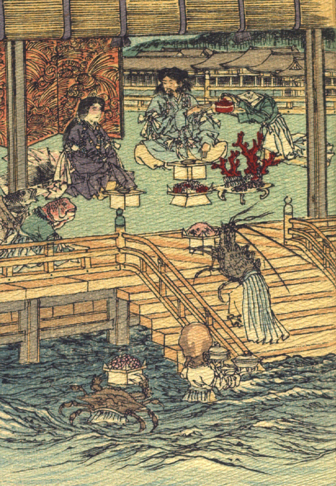

竜宮で豊玉姫にもてなされる山幸彦。女官のような装束をつけた魚たちが、酒や食べ物を運んでいる。
著作者：J. Dautremer／出典：親書誌：U426_nichibunken_0108：Le Prince Feu-Brillant et le Prince Feu-Luisant／日付：2006／資源識別子：U426_nichibunken_0108_0001_0000
Copyright (c)2010- International Research Center for Japanese Studies, Kyoto, Japan. All rights reserved.